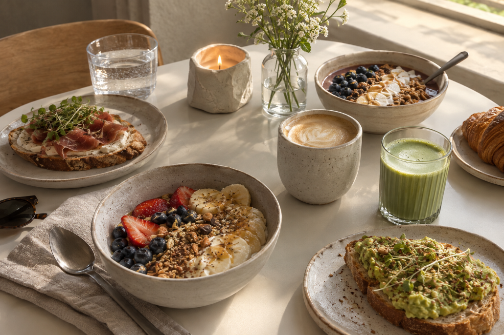
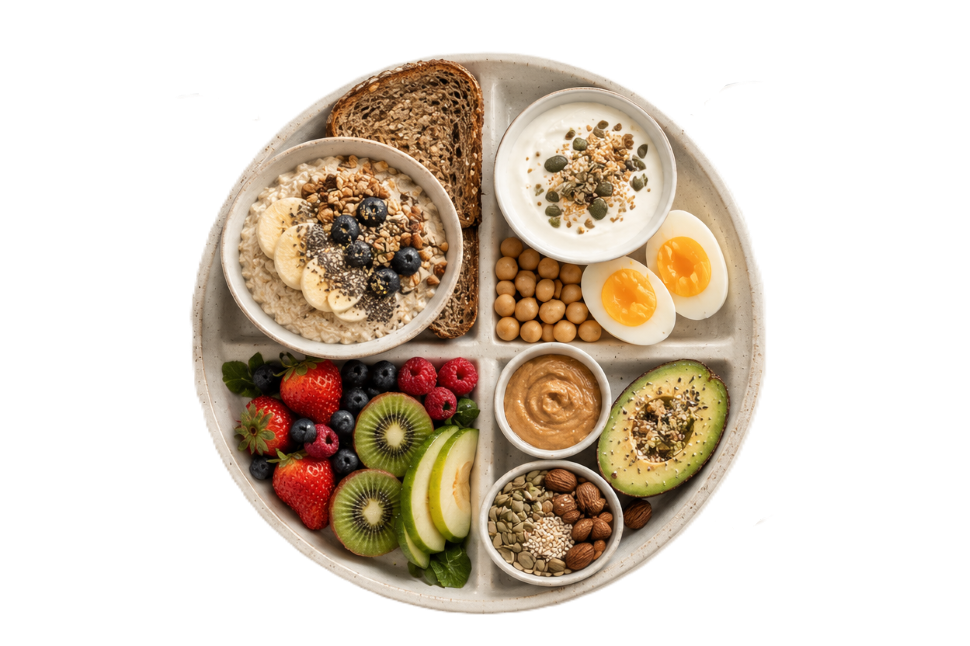

frukost hela dagen!
frukost
inspiration, recept & smarta tips för en bättre start på dagen.
frukost är så mycket mer än bara en måltid.
Sett från perspektivet av någon som älskar frukost är frukost inte bara något man äter för att stilla hungern. Det är dagens första energikälla och en stund att se fram emot, oavsett om det handlar om en snabb macka eller en lång helgfrukost.
Förhoppningsvis hittar du inspiration bland våra tips på snabba frukostar, näringsrika alternativ, helgfrukostar och smart meal prep. Oavsett vilka vanor eller preferenser du har kan en genomtänkt frukost ge dig en bättre start på dagen.
Lycka till med att hitta dina nya frukostfavoriter!
Varför är frukost viktigt?
Frukosten beskrivs ofta som dagens viktigaste mål, och det finns goda skäl till det. Efter en hel natts sömn bryter frukosten nattfastan och ger kroppen den första energin inför dagen. En näringsrik start fyller på energidepåerna så att du får kraft och ork att komma igång.
Utöver att ge fysisk energi har frukosten en stor betydelse för hjärnan. När du fyller på med näring på morgonen hålls blodsockret på en jämn nivå, vilket ökar koncentrationen och förbättrar fokus. Det gör det lättare att orka tänka, prestera och hålla ett jämnt humör i skolan eller på arbetet.
Att äta frukost bidrar dessutom till att skapa goda matvanor och en regelbunden måltidsrytm. Enligt rekommendationer från både 1177 och Livsmedelsverket motverkar en stabil måltidsordning risken för småätande under dagen och hjälper kroppen att behålla en sund balans hela dagen.
Vad bör en bra frukost innehålla?
Enligt riktlinjer för bra matvanor och ett allsidigt ätande bör en balanserad frukost kombineras av flera olika näringsämnen för att ge kroppen energi och hålla ett jämnt blodsocker:

Hälsosamma fetter
Att välja nyttigare och omättade fetter, till exempel genom Nyckelhålsmärkta alternativ, nötsmör eller frön, ger kroppen och hjärnan värdefull näring.
Vitaminer & antioxidanter
Att inkludera frukt, bär eller grönsaker tillför viktiga vitaminer, mineraler och antioxidanter.
Protein
Mjölkprodukter som yoghurt, fil eller mjölk, samt ägg eller baljväxter, tillför protein som hjälper kroppen att bygga och bevara muskler samt ger god mättnad.
Kolhydrater & fullkorn
Fiberrika kolhydrater och fullkorn från exempelvis grovt bröd, havregrynsgröt eller osötad granola ger långvarig energi och fibrer.
Genom att variera frukosten utifrån dessa grupper får kroppen en idealistisk start med rätt bränsle inför dagens alla stunder!